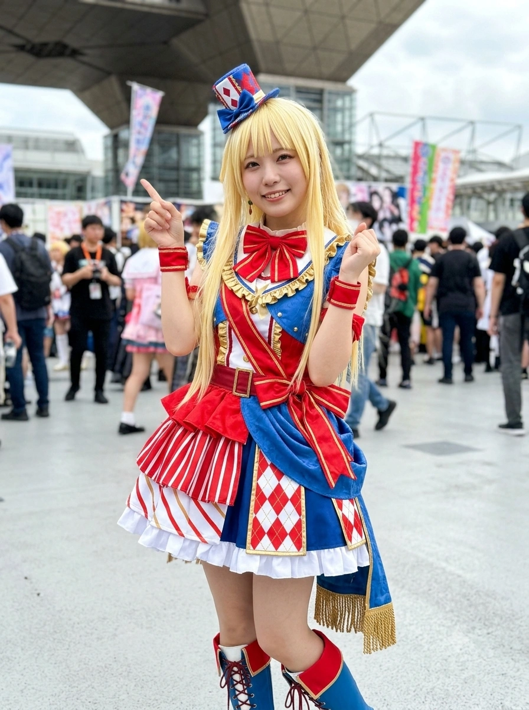

"밴드로, 모두랑 소리를 즐기는 거야!! 악기나 공연장이라면 우리 집에 다 있는걸? 돈은 세상을 웃게 만드는 데 써야지, 도박이나 남을 괴롭히는 데 쓰면 안 돼~!" "어라? 미셸 씨! 미셸 씨~!? 정말, 어디로 간 걸까? 미사키, 혹시 미셸 씨 못 봤어? 아참, 우리 집의 집사도 메이드도 검은 옷의 언니들도 모~두 좋은 사람들이야! 내가 웃는 얼굴을 선물해 줄게~!"
덕빈북도빈주시가원구현권면(弦巻面)의 대영주 가문에서 태어나 효빈광역시 창전구에서 성장한 상식 초월의 초특급 재벌가 외동딸이자, 온 세상을 미소로 물들이기 위해 결성된 5인조 밴드 『헬로, 해피 월드!(하로하피 효빈)』의 리더 겸 보컬. 동시에 막대한 사재를 출연해 효빈시와 빈주시 전역의 취약계층을 지원하는 『현권복지재단』의 최고 이사장이다.
출생지이자 가문의 본영이 위치한 빈주시 가원구 현권면(弦巻面)의 한자 '현권(弦巻)'을 일본어로 읽으면 놀랍게도 《BanG Dream!》 Hello, Happy World!의 보컬 츠루마키 코코로(弦巻 こころ)의 성씨인 '츠루마키(弦巻)'와 100% 완벽하게 일치한다! 여기에 순우리말 이름인 '마음'을 일본어로 번역하면 정확히 '코코로(こころ / 心)'가 되어, 성씨부터 이름까지 츠루마키 코코로와 완전무결한 일치를 이룬다. 생일 또한 코코로와 똑같은 2002년 8월 8일생(사자자리)이다.
허리까지 내려오는 화사한 금발 장발에 삐죽삐죽하고 귀여운 처피뱅 스타일 앞머리, 보석처럼 반짝이는 금빛 눈동자를 지녔다. 창전구 3대 쌉부자(기유호, 이주시, 조류희)나 청덕동의 벼락부자 영애 유세라, 심지어 원작 세계관의 토가와 그룹조차 발끝에도 미치지 못할 만큼 작중 세계관 전체를 통틀어 압도적 원톱(1위)의 재력과 권력을 보유한 사실상의 '신(데우스 엑스 마키나)' 같은 존재다. 그러면서도 사악함이나 선민의식 따위는 티끌만큼도 없이 "세상 모든 사람을 웃게 만들고 싶다!"는 어린아이 같은 순수함과 초인적인 운동 신경으로 똘똘 뭉친 타고난 엔터테이너다.
2. 생애 및 학창 시절 (현권면이 낳은 세계관 재력 1위 태양)
2.1. 빈주시 가원구 현권(弦巻)면의 초월적 대재벌 영애와 검은 옷의 언니들
2002년 8월 8일, 덕빈북도 빈주시 가원구 현권면(弦巻面) 현권리에 위치한 여의도 면적 맞먹는 대저택(사유림 산 전체 포함!)에서 글로벌 복합기업 『현권(츠루마키) 홀딩스』 총수 현태곤 회장의 외동딸로 태어났다.
태어나는 순간부터 세상의 모든 부(富)가 발아래에 있었고, 곤란한 일이나 원하는 일이 생기면 언제 어디서든 검은 정장과 선글라스를 착용한 여성 경호·수행원 부대(통칭 '검은 옷의 사람들 / 검은 옷의 언니들')가 소리소문없이 나타나 단 1초 만에 해결해 주었다. 이 때문에 마음이는 "세상에 불가능한 일은 없다(마음먹으면 한국에서 미국까지 다리도 놓을 수 있고 여름에 눈도 내리게 할 수 있다!)"고 순수하게 믿으며 표정 한 번 찌푸린 적 없이 해맑게 자라났다.
초등학교 입학 무렵, 더 많은 친구들의 웃는 얼굴을 만나기 위해 효빈광역시 창전구에 제2의 대저택('현권 캐슬')을 짓고 이주하여 창전초등학교와 창전중학교를 졸업했다. 좋아하는 음식은 '뭐든 다 좋아함!', 싫어하는 음식은 '없음!'일 정도로 편식이나 까탈스러움이 전혀 없으며, 동화책을 읽으며 즐거운 일을 찾는 것이 유일한 취미였다.
창전구의 명문 사립 여고인 월삼여자고등학교(하나사키가와 여학원 포지션)에 진학한 현마음은, 입학 첫날부터 교내에서 '이공간(異空間)'이라는 별명으로 불리며 전설을 썼다. 반 친구들이 마음이를 미워해서가 아니라, 마음이의 눈이 마주치면 특유의 초하이텐션 마이페이스에 휘말려 "자! 지금부터 우리 집 잠수함을 타고 무인도로 보물찾기하러 가자~!" 같은 감당 못 할 스케일의 사건에 강제로 끌려가게 되기 때문이었다.
특히 고등학교 시절 그녀가 남긴 두 가지 기행은 월삼여고 역사에 영구 박제되어 있다.
[1. 점심시간 본관 3층 교실 창문 다이빙 & 3회전 공중제비 착지 사건 (애니 2기 4화 고증)]
고2(2-B반, 출석번호 16번) 시절 어느 점심시간, 3층 교실에서 도시락을 먹던 현마음은 1층 중정 화단에서 1년 선배인 강숙미(토야마 카스미 본체 / 마음을 '코코롱'이라 부름!) 일행이 재미있는 이야기를 하고 있는 것을 발견했다.
보통 사람이라면 계단으로 뛰어 내려갔겠지만, 마음이에게는 계단조차 지루한 장애물이었다! 마음이는 "앗! 숙미(카스미)가 재미있는 걸 하고 있어~!"라고 외치며 그대로 본관 3층 교실 창틀을 밟고 허공으로 뛰어내리더니, 공중에서 완벽한 3회전 텀블링(공중제비)을 돌아 화단 잔디밭에 먼지 한 톨 안 날리고 사뿐히 착지해 버렸다!!
보통 사람이면 중상을 입었을 3층 높이에서 태연하게 뛰어내려 "안녕 숙미야~! 무슨 이야기 중이야?"라고 웃는 마음이의 초인적인 피지컬에 전교생이 경악을 금치 못했다.
[2. 교사들을 벌벌 떨게 만든 '야간 옥상 무단 침입 → 1초 만의 천문부 창설' 사건]
어느 날 밤, 마음이가 밤하늘의 별이 보고 싶어 출입이 금지된 월삼여고 본관 옥상 자물쇠를(검은 옷의 언니들의 도움으로) 열고 올라가 혼자 별을 구경하고 있었다. 순찰을 돌던 호랑이 학생주임 교사가 이를 발견하고 "거기 누구야! 야간 옥상 무단 침입은 정학이나 근신감이다!"라며 호통을 치며 달려왔다.
그러나 손전등 불빛에 비친 학생의 얼굴이 글로벌 재벌 현권(츠루마키) 가문의 외동딸 현마음이고, 옥상 구석 그림자 속에 검은 정장과 선글라스를 낀 경호원 언니 10명이 조용히 도열해 있는 것을 본 순간 학생주임 교사는 식은땀을 한 바가지 쏟으며 독백했다. '허억...!! 원래대로면 근신감이지만, 현권 가문의 외동딸에게 벌을 내렸다간 내 교직 신상에 무슨 일이 일어날지 모른다...!!'
결국 교사는 그 자리에서 태세를 180도 전환하여, 있지도 않던 교내 정식 동아리인 『월삼여고 천문부(부원: 현마음 1인)』를 그날 밤 즉석에서 승인·창설해 주고 야간 옥상 자유 출입 허가증까지 코팅해서 바쳤다! 이후 마음이는 이웃 학교인 고송여고의 1인 천문부장 허아영(히나)과 단둘이 학교를 초월한 합동 천문부 활동을 즐기게 되었다.
2.3. 길 잃은 송화음(카논) 포획과 『헬로, 해피 월드!』 결성 (2장·3장의 눈물과 성장)
고1 봄, 재미있는 일을 찾아 거리를 뛰어다니던 마음이는 드럼을 팔러 가다 길을 잃고 울먹이던 1년 선배 송화음(마츠바라 카논 본체)을 발견하고 그 자리에서 포획(?)해 거리 공연을 벌였고, 이어 같은 반(1-C)에서 분홍 곰 인형탈 '미셸' 알바를 하던 오쿠사와 미사키 포지션, 운동신경 발군인 키타자와 하구미 포지션, 연극부의 왕자님 세타 카오루 포지션을 차례로 끌어들이며 『헬로, 해피 월드!』를 결성했다.
평생을 즐겁게만 살아와 타인의 '고민'이라는 개념 자체를 이해하지 못했던 마음이는, 밴드 스토리 2장에서 미사키가 "너희가 원하는 건 내가 아니라 인형탈 미셸뿐이잖아!"라며 폭발하고 나갔을 때 큰 혼란에 빠졌다. 하지만 송화음의 조언("고민을 억지로 이해하려 하지 말고 마음답게 기운을 불어넣어 줘")을 듣고 각성하여, 비바람을 뚫고 미사키에게 달려가 "네가 헬로해피에 있을 의미를 고민한다는 건, 반대로 말하면 우리와 함께 있을 이유를 찾고 있다는 뜻이니까 오히려 멋진 일이야! 미셸 씨만큼이나 모두를 웃게 해주고 있는 건 바로 너, 미사키야!!"라고 외쳐 미사키를 구원해 냈다.
나아가 해피넬 왕국으로 떠난 3장에서는 자신의 무모한 시도가 한계에 부딪히고 동료들의 소중함을 절감하며 태어나서 처음으로 눈물을 흘리는 충격적인 정신적 성장을 보여주어 팬들을 전율케 했다.
2.4. 고교 졸업 후의 행보: 대학 진학 대신 『현권복지재단』 총괄이사장 & 월드 스마일 엔터테이너 취임!
시즌 3(대학 진학 시즌)에 접어들며 1년 언니인 송화음(효빈대)과 세타 카오루(엽월대)가 대학에 진학하고 미사키와 하구미도 졸업을 맞이했을 때, 현마음은 틀에 박힌 대학 강의실에 앉아 있는 대신 가문의 천문학적인 자본을 굴려 전 세계를 웃게 만드는 사회복지법인 『현권복지재단』의 최연소 총괄이사장 겸 프로 월드 스마일 엔터테이너로 취임했다! 개인 전용기와 크루즈선, 비행형 미셸 슈트를 동원해 효빈시와 빈주시, 나아가 전 세계 분쟁 지역과 아동 병원까지 찾아가 공연을 펼치고 있다.
3. 비주얼 및 캐릭터성 (삐죽 앞머리 금발 미소녀 & 렉스 루터급 데우스 엑스 마키나)
3.1. 155cm의 귀여운 동그란 얼굴과 전파송·보컬로이드까지 씹어먹는 보컬 스타일
허리까지 내려오는 밝고 화사한 금발(미미하게 연둣빛이 감도는 레몬 골드) 생머리에, 자칫 너프 요소가 될 수 있는 삐죽삐죽하고 불규칙한 처피뱅 앞머리를 특유의 동그랗고 납작한 귀여운 아기 고양이상 얼굴(Live2D 특징)로 완벽하게 소화해 내는 미소녀다. 신장은 155cm로 아담하며, 가만히 서 있는 법이 없이 항상 통통 튀어 다닌다.
보컬 스타일은 담당 성우 이토 미쿠의 뛰어난 역량이 100% 반영되어 있다. 정통 록 밴드 보컬보다는 통통 튀는 뮤지컬·아이돌 보컬에 가까운데, 연기 톤을 그대로 유지하면서도 발음(딕션)이 소름 끼칠 정도로 정확하고 고음과 저음을 자유자재로 오간다! 덕분에 일반적인 팝뿐만 아니라 숨 쉴 틈 없이 빠른 초고속 보컬로이드 곡, 전파송(『POP TEAM EPIC』, 『에일리언 에일리언』 등), 빅밴드 재즈 스윙 곡에서 타의 추종을 불허하는 소화력을 보여준다.
3.2. 바보 트리오 필두? 알고 보면 허아영(히나)과 맞먹는 '무연습 프로급 저글링' 운동·통찰 천재!
교내와 밴드 판에서는 흔히 현마음, 세타 카오루, 키타자와 하구미 세 사람을 묶어 '하로하피 바보 트리오'라고 부르지만, 학계의 정설은 "정작 진짜 순수 바보는 하구미 한 명뿐이고, 현마음은 허아영(히나)에 필적하는 규격 외의 천재다!"라는 것이다.
평소 현실 감각이 없어서 그렇지 학업 이해도나 사람의 본심을 꿰뚫어 보는 통찰력이 날카로우며, 특히 운동 신경과 신체 제어 능력은 가히 초능력자(초인) 수준이다! (단, 학교 체육대회 때는 단체 종목 규칙을 자기 멋대로 해석할 위험이 있어 솔로 참가 종목만 뛴다.)
[2019년 신년 장기자랑 이벤트: 무연습 외발자전거 프로 저글링으로 갑분싸 만든 사건!]
신년 합동 장기자랑 대회에서 미사키와 함께 무대에 오른 현마음은, 태어나서 '저글링(공 돌리기)'이라는 단어조차 그날 처음 들어봤으면서 단 한 번의 연습도 없이 시작하자마자 태양의 서커스 프로 곡예사 뺨치는 초고난도 5구 저글링과 접시돌리기, 심지어 즉석에서 외발자전거를 타면서 저글링하는 신기를 선보였다!
문제는 마음이의 실력이 너무나도 아스트랄한 프로 레벨이었던 탓에, 구경하던 포피파·로젤리아·앱글·파스파레 멤버 전원이 환호를 넘어 경외감과 질림(?)을 느껴버려 공연장 분위기가 순식간에 짜게 식어버리는(갑분싸) 사태가 발생했다는 것이다!(오히려 저글링을 제안했던 미사키만 옆에서 죽어라 땀 흘리며 연습해 겨우 장단을 맞췄다.)
3.3. 창전구·청덕동 부자들을 다 합쳐도 발끝에도 못 미치는 '판타지급 초월 재력'
효빈위키와 뱅드림 세계관에는 수많은 부자 캐릭터들이 등장한다. 창전구 3대 쌉부자(기유호, 이주시, 조류희), 천주시 인자읍의 부잣집 영애 김인자, 청덕 다이버시티 재개발로 수백억 자산가가 된 유세라, 그리고 후속작의 토가와 그룹까지 쟁쟁한 금수저들이 즐비하다.
그러나 이 모든 부자 캐릭터들의 가문 재산을 전부 합쳐도 현마음의 『현권(츠루마키) 가문』 재력과 권력에는 발끝조차 미치지 못한다! 비유하자면 다른 부자들이 현실의 대기업 회장이나 건물주 수준이라면, 현마음네 가문은 마블·DC 코믹스에 나오는 토니 스타크(아이언맨)나 렉스 루터, 혹은 도라에몽의 4차원 주머니에 가까운 '판타지적 자본 권력'이다.
보유 자산 스케일: 개인 보잉 여객기, 초호화 크루즈 유람선, 심해 탐사용 개인 잠수함, 허머 H2 리무진을 기본 자가용으로 굴리며, 생일 선물로 "작은 거면 돼~"라고 하니 아버지가 전용 소프트볼 배팅 센터와 전망대 마천루 빌딩, 심지어 우주에 있는 실제 별(항성)의 국제천문연맹 명명권을 사주셨다!
근미래 오버테크놀로지 보유: 걸파☆피코에서는 단 며칠 만에 도심에 테마파크('스마일 놀이동산')를 뚝딱 건설하고, 평범한 천 쪼가리 인형탈이었던 '미셸 슈트'에 제트 추진기와 HUD 디스플레이를 달아 하늘을 날아다니는 아이언맨 슈트로 마개조하는가 하면, 영혼이 바뀌는 기계까지 만들어낸다.
무제한 교통카드와 국가 정상급 인맥: 송화음(카논)이 우연히 마음이의 선불 교통카드(이즐/티머니) 잔액 화면을 봤더니 숫자가 아니라 아예 『현권 가(弦巻家 - 한도 없음)』라고 한글로 찍혀 있었다(2성 『나도 펭귄!』 고증)! 생일 파티를 열면 기본 하객이 내각 장관과 총리, 세계 각국의 정상들이며 유럽 해피넬 왕국의 국왕과도 맞먹는 친구 사이다.
4. 빈주시·효빈광역시와의 관계 (현권면·현권복지재단 유니버스)
4.1. 츠루마키(弦巻) 가문의 은밀한 영지, 빈주시 가원구 『현권면(弦巻面)』과 예비군 버스 정류장의 진풍경
"저기요... 버스 정류장에 우리 예비군 아저씨들이랑 같이 서 있는 저 검은 정장에 선글라스 낀 누나들 대체 누구야...? 무서워서 담배도 못 피우겠어..."— 현권면 동원훈련장 예비군들의 실제 증언
효빈광역시 북동쪽에 인접한 대도시 빈주시가원구 외곽에는 인구 2,342명의 한적한 농촌·산림 지역인 현권면(弦巻面)이 있다. 관할 법정리로는 현권리(면소재지), 궁천대리, 율원리, 횡산리, 석타리가 있으며, 한자 표기가 코코로의 성씨인 '츠루마키(弦巻)'와 100% 동일한 현권 가문의 발상지이자 본영이다(가을마다 마음이가 "우리 집 산에 송이버섯이랑 밤이 많이 자라 있어! 단풍놀이도 우리 산에 와서 해!"라고 말한 그 사유림 산이 바로 이 현권면의 산 전체다!).
재미있는 점은 현권면이 산지가 많아 대규모 예비군 동원훈련장과 군사 시설이 함께 위치해 있다는 것이다. 이 때문에 예비군 훈련 시즌만 되면 현권면 시골 버스 정류장에 개구리 군복·디지털 군복을 입은 예비군 아저씨들이 바글바글 모이는데, 그 아저씨들 틈바구니에 현마음 아가씨를 경호하기 위해 파견된 키 175cm 이상의 검은 정장·선글라스 차림 여성 경호원 언니들(Black Suits) 20여 명이 미동도 없이 섞여 서서 버스를 기다리는 아스트랄한 진풍경이 벌어진다! 위압감에 눌린 예비군들이 훈련장 들어가기 전부터 각을 잡고 바른 자세로 서 있게 만드는 기적의 치안 효과를 자랑한다.
4.2. 압도적 자본주의의 긍정 주입: 『현권복지재단』 5대 운영 시설 총람
현권(츠루마키) 가문의 천문학적인 자본력은 빈주시를 넘어 효빈광역시 전역의 사회복지 인프라에 스며들었다. 현마음 이사장의 이념인 "세계를 미소로! 웃지 않는다는 건 시시하잖아!"를 실현하기 위해 설립된 사회복지법인 『현권복지재단』은 박효빈 시장의 시정 복지와 결합해 지역 사회에 자본주의의 긍정 폭격(?)을 가하고 있다.
현마음(현권) 감성 위탁 기관. 센터 정문에 현마음의 친필 슬로건인 "돈은 세상을 웃게 만드는 데 써야지, 도박엔 쓰면 안 돼!"가 걸려 있으며, 도박 빚에 쪼들려 우울해하는 내담자들에게 압도적인 자본주의의 긍정 에너지와 무상 직업훈련을 주입해 도박 생각을 원천 증발시킴.
지역아동센터 1
사가당 꿈나무 지역아동센터
효빈시 동구 사가당동
현권재단의 무제한 자금력이 투입되어 365일 매일매일이 호텔 뷔페급 생일파티 간식 타임으로 운영됨. 센터 아이들이 간식을 너무 배불리 먹고 와서 집에서 저녁밥을 안 먹는다는 학부모들의 행복한 항의(?)가 빗발치는 맞벌이 가정 식비 절감 1등 공신!
지역아동센터 2
신동 지역아동센터
효빈시 안천구 신동
4.9천 명 아동 밀집 구역. 막강한 재단 예산으로 전 세계 모든 희귀 보드게임과 닌텐도 스위치·PS5 최신 타이틀이 출시 당일 박스로 구비되어 있어 관내 아동 출석률 100.0%를 기록 중. (박효빈 시장과 나수민 셰프도 자주 격려 방문함)
가정폭력 피해쉼터
스마일 여성쉼터
효빈시 내 극비 보안구역
현마음의 자본력이 투입된 안전 등급 SSS급 철통 보안 요새(조유진이 초기 임시 보호를 받았던 바로 그곳!). 혹여나 가정폭력 가해자가 반경 500m 내에 접근하면 검은 정장과 선글라스를 낀 여성 요원 언니들이 1초 만에 나타나 물리적으로 제압해 경찰서로 택배 배송해 버림.
장애인 주간보호
신리 행복 주간보호센터
효빈시 탄성군 야진읍 신리
현권 가문의 도라에몽급 시공 능력이 실현되는 곳. 장마철에 구관 시설 지붕에서 빗물이 한 방울 새자, 보고를 받은 현마음이 "비가 새면 웃을 수 없잖아!"라고 한마디 하여 다음 날 아침 검은 옷의 요원들이 최첨단 신축 배리어프리 건물을 통째로 새로 지어놓음.
4.3. 전설의 『윤재훈 1초 컷 야산 사출 및 물리치료비 하사 사태』와 정치 성향
현마음의 고향인 빈주시 가원구 현권면은 정치 지형상 확고한 더불어민주당 우세 지역이며, 현마음 본인도 박효빈 시장과 함께 사회복지 사업을 펼치며 깊은 우호 관계를 맺고 있다.
그러던 어느 날, 효빈시의 영원한 빌런 윤재훈이 "2D 만화 캐릭터 이름을 딴 현권복지재단이 웬 말이냐! 박효빈과의 복지 카르텔 예산 낭비 결사반대!"를 외치며, 끈질긴 뒷조사 끝에 가정폭력 피해자 보호시설인 『스마일 여성쉼터』의 비공개 위치를 알아내어 그 앞길에서 확성기 피켓 시위를 벌이려 한 적이 있었다!
그러나 윤재훈이 확성기 전원 스위치를 켜기도 전인 단 1초 만에, 가로수 그림자 속에서 소리 없이 나타난 검은 정장 요원 언니 4명에게 팔다리가 결박당한 채 공중제비로 메쳐졌고, 그 즉시 검은색 특대형 포대자루에 깔끔하게 담겨 검은색 리무진 트렁크에 실린 뒤 20km 떨어진 현권면 야산 중턱으로 사출(투하)되어 버렸다! 더 웃긴 것은 사출된 윤재훈의 주머니 속에 황금색 봉투가 하나 꽂혀 있었는데, 거기에는 현마음의 동글동글한 글씨로 [아저씨! 아픈 곳 치료하고 다음부턴 웃는 얼굴로 살아야 해~! - 마음 -]이라는 쪽지와 함께 정형외과 물리치료비 현금 50만 원이 자비롭게 들어 있어 윤재훈이 수치심과 공포에 오열하며 두 번 다시 현권재단 근처에는 얼씬도 못 하게 되었다.
오쿠사와 미사키 포지션 (헬로해피 DJ / 미셸): 현마음의 커플링 중 뱅드림 전체를 통틀어 최상위권 인기를 자랑하는 영혼의 파트너(통칭 미사코코). 기상천외한 기행을 벌이는 순수 결정체 현마음과, 투덜거리면서도 결국 마음이의 모든 소원을 현실적으로 조율해 주는 상식인 미사키의 조합이다.
겉으로는 마음이가 미셸(분홍 곰)과 미사키를 완전히 별개의 생명체로 여겨 "미사키! 올해야말로 네 생일 파티에 미셸 씨도 같이 부르자!"라고 천연덕스럽게 말하지만, 3성 『무적의 히어로』 에피소드나 3주년 백스테이지 대사("미셸 씨라면 어떻게 말했을지 미사키는 알고 있지?")를 보면 실제로는 미사키가 미셸이라는 것을 다 알고 있으면서도, '영웅 미셸 씨'와 '소중한 친구 미사키' 둘 다 잃고 싶지 않아서 일부러 모른 척해 주고 있다는 것이 학계의 정설이다![5]실제로 미사키가 "대기업 권력으로 유명 록 페스티벌에 직행 출전할 수 있다"는 검은 옷 언니들의 제안을 거절할 때, 마음이의 "밴드의 일은 우리들의 힘으로 직접 해야 의미가 있어!"라는 말을 듣고 감명받아 거절했을 만큼 밴드의 정신적 지주다.
송화음 (마츠바라 카논 본체 / 드럼): 마음이가 골목에서 처음 포획해 온 창립 동지이자, 마음이의 폭주를 부드럽게 보좌하는 가장 듬직한 언니(통칭 카논코코). 화음이의 생일이 되면 마음이가 화음이를 위해 자택 정원에 '이동식 해파리 대형 수족관 트럭'을 통째로 불러준다!
키타자와 하구미 & 세타 카오루 포지션 (베이스 & 기타): 마음이와 함께 온 동네를 뛰어다니며 사고를 치는 '바보 트리오' 동료들. 하구미는 강숙미와 더불어 마음이를 "코코롱(こころん)!"이라는 애칭으로 부르는 유이한 인물이며, 카오루가 높은 곳을 무서워하는 줄도 모르고 마음이가 세컨드 필름라이브 때 공중 곤돌라와 비행 미셸을 태워 카오루를 기절시키기도 했다.
5.2. 타 밴드 핵심 관계 및 호칭 일람표 (연상에게도 호칭 생략 반말 & 아가씨 어미 '~わ'!)
현마음의 화법에는 두 가지 엄청난 특징이 있다. 첫째는 천진난만한 어린아이 같은 태도이면서도 초상류층 영애답게 말끝마다 '~わ(와 / ~인걸, ~란다)'를 붙이는 우아한 아가씨 말투(원작에서 이 어미를 쓰는 다른 인물은 천성로, 우희나, 허사영, 조류희, 츄츄뿐이다!)를 구사한다는 점이다.
둘째는 자신보다 나이가 많은 1~2년 연상 언니들(천성로, 허사영, 허아영, 송화음, 우희나 등)을 포함해 상호대사가 있는 모~든 인간 캐릭터들에게 '언니/선배/씨/쨩' 같은 호칭을 일절 붙이지 않고 100% 반말과 이름만으로 부른다는 것이다! 반면 웃기게도 사람이 아닌 동물이나 인형, 사물(미셸 씨, 고래 씨, 유령 씨, 태양 씨 등)에게는 꼬박꼬박 '~씨(さん)'를 붙여 존칭하는 '사물존칭의 끝판왕'이다!
대형 일화 1: [걸파☆피코 & 세컨드 필름라이브 실사판] HAF 개막식 하늘을 가른 『아이언맨 비행 미셸 슈트』와 고소공포증 카오루 기절 사건! 현권(츠루마키) 가문의 오버테크놀로지 기술력과 자본력이 효빈시 하늘을 문자 그대로 지배한 사건이다!
제16회 HAF(효빈 애니메이션 페스티벌) 개막식 메인 무대에서 헬로해피가 공연을 하게 되었을 때, 현마음은 "평범하게 무대 옆에서 걸어 나오는 건 시시하잖아! 하늘에서 날아서 등장하면 모두가 깜짝 놀라며 웃어줄 거야~!"라고 선언했다.
미사키가 "말도 안 되는 소리 하지 마!"라고 태클을 걸었으나, 이미 검은 옷의 언니들과 현권중공업 항공우주연구소 박사들이 밤새워 평범한 인형탈이었던 '미셸 슈트' 발바닥과 등 뒤에 소형 무소음 제트 반중력 추진기(Arc Reactor급!)를 장착하고, 공중 부양 곤돌라 스테이지까지 세팅을 끝내버렸다!
개막식 피날레 앵콜 곡이 울려 퍼지는 순간, 헬로해피 멤버 전원이 공중 곤돌라를 타고 HSCO 돔 천장에서 내려왔고, 클라이맥스에서는 현마음이 하늘을 날아다니는 비행형 미셸 슈트 어깨 위에 탑승한 채 와이어도 없이 공연장 상공을 360도 선회하며 백 텀블링과 라이브를 동시에 소화해 내어 5만 관중의 입을 떡 벌어지게 만들었다!
세타 카오루 포지션: (사실 극심한 고소공포증 환자라 첫 곡 『팬텀 시프』를 연주할 때까진 아기고양이들 앞에서 허세를 부리느라 죽을힘을 다해 버텼으나, 곡이 끝나고 지상에 발이 닿자마자 하얗게 불타버린 채 그 자리에서 기절!) "아아... 덧없구나... (털썩)" 오쿠사와 미사키 포지션: (비행 미셸 슈트 안에서 영혼이 털린 채로) "살려줘... 왜 곰 인형탈에서 제트엔진 불꽃이 나오는 건데에에!!"
대형 일화 2: [로젤리아 우희나(유키나)·허사영(사요) 강제 웃기기 대작전] 얼음 공주들을 무너뜨린 태양의 마이페이스! (feat. 우희나, 허사영) 세상에서 '웃지 않는 사람'을 보면 어떻게든 웃게 만들어야 직성이 풀리는 현마음의 최대 타깃은 단연 효빈시에서 가장 진지하고 안 웃기로 소문난 로젤리아의 보컬 우희나(미나토 유키나 본체)와 기타리스트 허사영(히카와 사요 본체)이다!(통칭 사요코코로 / 유키코코)
특히 현마음은 두 사람이 자기보다 1살 언니인데도 호칭 하나 안 붙이고 해맑게 "희나(유키나)~!", "사영(사요)~!"이라고 반말로 부르며 들이댄다.
어느 날 우희나의 생일(10월 26일)을 맞아 마음이는 "오늘은 희나의 생일이야! 어떻게 하면 그 진지한 희나가 활짝 웃는 얼굴이 되어 줄까?"라며 검은 옷의 언니들을 시켜 『거대 황금 고양이 모양 이동식 무대 트럭』을 합주실 앞에 대령시켰다. 그리고 깐깐한 선도부장 허사영이 우전동 비 오는 축제(『Beatin' in the Rain』)에서 우울해하고 있을 때는, 강숙미·태미연과 함께 거대한 전통 북(와다이코)을 둥둥 두드리며 사영이의 손을 잡고 강제로 축제 춤판 한가운데로 끌어들였다!
허사영: "츠, 츠루마키(현) 씨! 이러지 마세요, 공공장소에서 소란을 피우는 건 풍기문... 앗, 박자가 빨라지네요?!" (결국 마음이의 페이스에 완전히 휘말려 진지한 얼굴로 북 춤을 완벽하게 마스터함!) 우희나: (고양이 귀 모양 꽃다발을 내미는 마음이를 보며 무표정이 무너지고 작게 미소 지으며) "...후훗, 현(츠루마키) 씨의 노래와 행동은 언제나 예측할 수가 없네. 고마워, 마음아."
그 철벽 같던 로젤리아의 투톱조차 무장해제시키는 현마음의 친화력은 세계관 최강이다.
대형 일화 3: 『나도 펭귄!』 & 송화음 생일 이벤트 — 내 마당에 남극 빙산과 해파리 이동 수족관을 소환하다! (feat. 송화음, 고다솔) 현마음의 자본주의적 우정 표현 방식은 언제나 상상을 초월한다.
여름철 수족관에 놀러 갔다가 아기 펭귄 '펭짱'과 친해진 마음이는, 겨울이 되자 "눈이 잔뜩 내렸으니까 우리 집 정원에 남극을 만들어서 펭귄 씨들이랑 놀자!"라며 검은 옷의 언니들을 시켜 창전구 대저택 마당에 인공 제설기 50대와 거대한 얼음 빙산 슬라이드를 설치해 버렸다!
더욱 압권이었던 것은 단짝인 드러머 송화음(카논)의 생일(5월 11일)이었다. 마음이는 "화음아, 오늘은 네 생일이지! 선물이야, 짜잔~!"이라며 현관문을 열었는데, 대저택 앞마당에 무려 특수 개조된 40톤급 대형 아쿠아리움 트레일러('이동 수족관') 3대가 주차되어 그 안에서 수천 마리의 발광 해파리들이 유영하고 있었던 것이다!
송화음: "후에에엥?! 마, 마음(코코로) 쨩!! 수족관에 가는 게 아니라 수족관이 통째로 집 앞마당으로 걸어왔어어어!!"
이날 초대받아 함께 온 후배 고다솔(토모리)과 허아영(히나)은 이동 수족관 옆에서 밤새도록 펭귄과 해파리, 별자리를 구경하며 "마음 언니는 혹시 진짜로 우주('웃는 얼굴 좋아 별')에서 온 외계인 왕녀님이 아닐까..."라고 진지하게 토론했다.
대형 일화 4: [공식 4컷 만화 전설의 짤방] "만세~!" 양손 번쩍 들기 포즈 대유행과 프리코네 '콧코로(이토 미쿠)' 성우 개그 대소동! 공식 4컷 만화에서 현마음이 해맑은 동그란 눈으로 두 팔을 하늘 위로 번쩍 들고 있는 심플하고 귀여운 짤방(만세 포즈)은 효빈시 에브리타임과 디시인사이드 등 모든 커뮤니티에서 '무지성 긍정 및 해탈 짤방'으로 폭발적인 패러디를 낳았다.
한편, 현마음의 담당 성우인 이토 미쿠의 또 다른 인생 대표작 캐릭터가 타 게임 《프린세스 커넥트! Re:Dive》의 주역인 '콧코로(コッコロ)'인데, 일본어 표기상 '코코로(こころ)'와 '콧코로(コッコロ)'가 작은 츠(촉음 ッ) 딱 한 글자 차이라는 점 때문에 엄청난 성우 개그 밈이 형성되었다!
한 번은 HAF 코스프레 무대에서 현마음이 장난삼아 엘프 귀를 붙이고 하얀 무녀복을 입은 채 콧코로 특유의 놀란 표정(0x0 도장 표정)을 지으며 "주인님(미사키)~ 오늘도 기운차게 세상을 미소로 만들어요~!"라고 외쳤는데, 목소리 본체가 똑같다 보니 현장에 있던 프리코네 유저들과 뱅드림 유저들이 동시에 뇌정지를 일으키며 자지러졌다.
대형 일화 5: [아베 무지카 세계관 대충돌] 토가와 그룹의 음모를 '용돈(?)' 한 방으로 무력화시킬 뻔한 세계관 최강자! (feat. 나소연, 고다솔) 후속작 애니메이션 『BanG Dream! Ave Mujica』에서 후배 밴드 멤버들을 괴롭히는 거대 재벌 흑막으로 '토가와 친족 회의(토가와 그룹)'가 등장했을 때, 팬들 사이에서 가장 많이 나온 우스갯소리가 바로 "야, 사키코가 고생할 게 뭐 있냐? 그냥 같은 세계관 최강 재벌인 츠루마키 코코로(현마음)한테 가서 '우리 할아버지가 괴롭혀요' 한마디만 하면 검은 옷의 언니들이 5분 만에 토가와 그룹 주식을 현찰로 다 사버려서 해결되는 거 아니냐?!"였다!
실제로 효빈시에서도 후배인 나소연(나가사키 소요)과 고다솔(토모리)이 어른들의 복잡한 재벌가 사정 때문에 심각한 표정을 짓고 있자, 지나가던 현마음 이사장이 다솔이의 손을 덥석 잡고 해맑게 말했다.
현마음: "어라? 다솔(토모리)이랑 소연(소요)이 왜 그렇게 웃지 않고 시무룩한 얼굴을 하고 있어? 돈이나 어른들 회사가 말썽을 부려서 친구가 못 웃는 거라면, 내가 우리 집 검은 옷의 언니들한테 말해서 그 회사를 오늘 저녁에 통째로 사서 놀이공원으로 바꿔줄까~? 하려고 하면 뭐든지 할 수 있어~!" 나소연: (그 어떤 어른들의 협박보다도 무서운 현권 가문의 '즉석 기업 인수합병(M&A) 후 놀이공원 개조' 발언에 등골이 서늘해지며) "아, 아니에요 마음(코코로) 선배님!! 저희 힘으로 해결할 수 있으니까 제발 기업 인수는 참아주세요오오!!"
7. 김시연·고다솔·유세라·강숙미 일행들과의 대형 일화 (세대 통합 4대 대첩)
대첩 1: [유세라(세라스)·기유호·이주시와의 '효빈시 금수저 서열 정리'] "우리 집 산에 송이버섯 캐러 올래? 잠수함 태워줄게~!" (feat. 유세라, 기유호, 이주시) 효빈시를 대표하는 부잣집 아가씨들이 한자리에 모인 『청년 자선 바자회』 날의 일화다.
창전구 패션 재벌 딸 기유호, 급식 재벌 딸 이주시, 그리고 청덕 다이버시티 재개발로 수백억 자산가가 되어 블랙카드를 휘두르는 5차원 영애 유세라(세라스 본체)가 서로 자선 경매 물품을 자랑하고 있을 때, 노란색 원피스를 입은 현마음 이사장이 아장아장 걸어 들어왔다.
유세라: "오호호호! 이 세라스 님이 오늘 바자회를 위해 아빠의 청덕 다이버시티몰 VIP 라운지 전세권을 내놓았습니다!" 현마음: "우와~ 세라, 그거 정말 재미있겠다! 그럼 나는 바자회 경품으로 우리 집 개인 크루즈 유람선이랑 심해 잠수함 1년 탑승권, 그리고 빈주시 현권면에 있는 우리 집 송이버섯 산(山) 하나를 통째로 선물할게~! 아참, 벚꽃도 근사하니까 여기 온 친구들한테 왕벚나무를 아예 한 그루씩 뿌리째 분양해 줄까?!" 유세라 & 기유호 & 이주시: (가게나 건물 수준이 아니라 잠수함과 산(山)을 경품으로 내놓는 세계관 넘사벽 1위 재벌의 스케일에 블랙카드를 조용히 주머니에 다시 집어넣으며 90도 폴더 인사) "...현권(츠루마키) 이사장님 앞에서는 저희가 감히 부자 명함을 내밀 수 없사옵니다!!"
대첩 2: [마서령(마시로) 사회복지사 생일 축하와 현권복지재단 후원] "마시로! 자, 웃어 봐! 스마일이야~!" (feat. 마서령, 오다혜) 2022년 생일 대사 고증 그대로, 현마음은 평소 소심하고 부정적인 생각에 빠지기 쉬운 1년 후배 마서령(쿠라타 마시로 본체, 154cm)을 볼 때마다 두 손으로 서령이의 볼을 잡고 "해피 버스데이 마시로(서령)! 자, 웃어 봐! 스마일이야~!"라며 긍정의 기운을 불어넣어 준다.
특히 2026년 마서령이 효빈대학교 사회복지상담학과를 졸업하고 모교 부설 종합사회복지관의 정식 사회복지사 겸 사례관리상담사로 임용되었을 때, 현권복지재단 최고 이사장인 현마음은 서령이의 첫 출근을 축하한다며 복지관 마당에 어린이들을 위한 미니 회전목마와 무제한 간식 푸드트럭, 그리고 3미터짜리 초대형 푹신푹신 미셸 에어바운스를 설치해 주었다!
마서령: (눈에 별이 반짝이며 미셸 에어바운스에 폭 안겨) "우와아... 마음(코코로) 선배님... 미셸 씨가 거대해져서 복지관 아이들을 안아주고 있어요... 너무 행복해요..." 오다혜 ('다혜 쌤'): "어라~ 마음이가 준 미셸 에어바운스 옆에 우리 집 토끼 20마리를 풀어놓으니까 여기가 바로 천국이네~♪"
대첩 3: [강숙미(카스미)와의 '코코롱 & 숙미' 도파민 폭발 듀오] 3층 다이빙과 별 스티커·스마일 배지의 대융합! (feat. 강숙미, 이아리) 『포핀☆스타』의 보컬이자 스튜디오 효빈 대표인 강숙미(토야마 카스미 본체)와 현마음(코코로) 두 사람이 만나면, 이아리 검사와 미사키는 그날로 두통약을 두 통씩 까먹어야 한다!
숙미는 마음이를 "코코롱~!"이라 부르고 마음이는 12살이나 언니인 숙미를 해맑게 "숙미(카스미)~!"라고 반말로 부르는데, 숙미의 '키라키라 도키도키(반짝반짝 두근두근)'와 마음이의 '세계를 스마일로!'가 결합되면 물리 법칙을 무시하는 기행이 벌어진다.
어느 날 스튜디오 효빈이 제작하는 《극장판 레일루미네》의 불꽃놀이 작화 참고 자료가 필요하다고 강숙미가 말하자, 현마음은 "불꽃놀이가 보고 싶어? 그럼 지금 당장 우리 집 불꽃 장인 언니들을 불러서 밤하늘에 진짜로 1만 발의 스마일 모양 특대형 불꽃을 쏘아 올리자~!"라며 그날 밤 고송동 해상에서 사비 10억 원을 들여 실제 불꽃놀이 축제를 열어버렸다!
대첩 4: [합법 얀데레 김시연과의 세계관 최강 '웃는 얼굴' 대결] "시연아, 너는 왜 웃으면서 커터칼을 들고 있는 거니~?" (feat. 김시연, 고소유) 2차 창작 팬덤에서 현마음(코코로)이 너무 지나치게 밝기 때문에 '만약 한 번 멘탈이 망가지면 세계관 최강의 얀데레가 될 것 같다'는 밈이 있는데, 이를 현실에서 구현하고 있는 효빈대 사회과학대 회장 김시연(우에하라 아유무 본체)과 현마음이 만났을 때의 소름 돋는 일화다.
어느 날 시연이가 고소유에게 추파를 던진 타과 남학생을 응징하려고 생글생글 웃는 얼굴로 등 뒤에 문구용 커터칼을 숨기고 걸어가고 있을 때, 현마음이 해맑게 다가와 시연이의 두 손을 덥석 잡았다!
현마음: (티끌 한 점 없이 맑고 순수한 황금빛 눈동자로 시연이의 눈을 똑바로 바라보며) "어라? 시연아! 너 입으로는 웃고 있는데 눈은 하나도 안 웃고 있네? 소유랑 같이 있을 때처럼 진짜로 행복한 웃는 얼굴을 해야지~! 자, 손에 든 그 차가운 칼 씨는 우리 검은 옷의 언니한테 맡기고, 나랑 같이 소유 데리고 해피넬 왕국으로 크루즈 여행 가자~!" 김시연: (자신의 얀데레 살기를 순수한 태양 같은 백만 볼트 긍정 에너지와 물리적 재력으로 단 1초 만에 정화(?)시켜 버리는 현마음의 포스에 식은땀을 흘리며 무장해제) "...아, 네... 마음 선배님. 크루즈 선실은 저랑 소유 단둘이 쓰는 스위트룸으로 주시는 거죠...? ^^"
어둠의 광기조차 빛의 광기(긍정 100%) 앞에서는 맥을 못 춘다는 것을 증명한 전설의 사건이다.
8. 가족 관계 (별의 명명권을 선물하는 아버지와 검은 양복 친위대)

[현마음 코스프레 사진]
츠루마키 코코로의 트레이드마크인 삐죽삐죽한 금발 앞머리와 화려한 해피 마칭 밴드 의상, 보는 사람까지 행복하게 만드는 백만 불짜리 미소를 완벽하게 재현한 현마음.
8.1. 아버지 현태곤 회장 & 어머니 권미소 총재
아버지 현태곤 회장은 빈주시 가원구 현권면을 본영으로 둔 초국적 대기업 『현권(츠루마키) 홀딩스』의 총수다. 외동딸 마음이의 말이라면 하늘의 별도 따다 주는 딸바보로, 실제로 딸의 생일에 우주 항성의 공식 명명권(마음이는 그 별을 '웃는 얼굴 좋아 별 エガオスキー星'이라고 부른다!)을 선물하고 딸이 사회복지재단을 만들고 싶다고 하자 수조 원의 기금을 출연해 『현권복지재단』을 설립해 주셨다. 어머니 권미소 총재 역시 딸의 해맑은 미소를 세상에서 가장 소중히 여기는 자애로운 어머니다.
8.2. 검은 옷의 언니들 (Black Suits) & 집사·메이드단
현권 가문을 보위하는 수백 명의 최정예 여성 수행원 및 경호원 부대. 평소에는 전봇대 뒤나 나무 위, 혹은 현권면 예비군 훈련장 버스 정류장에 스텔스 모드로 은신해 있다가, 현마음이 곤란해하거나 "이런 게 있으면 좋겠다~!"라고 중얼거리는 순간 0.1초 만에 땅속이나 하늘에서 솟아나 모든 것을 해결한다. 마음이 본인은 "우리 집의 집사도 메이드도 검은 옷의 사람도 모~두 좋은 사람이야!"라며 가족처럼 아낀다.
9. 여담
2021년 만우절 "실은 나 안약 잘 넣어!"의 귀여운 진실: 세상 모든 일을 척척 해내는 천재 현마음이 의외로 눈을 깜빡이지 않고 안약(점안액)을 넣는 것만큼은 무서워해서 잘 못 넣는다! 그래서 2021년 만우절에 "지금부터 거짓말을 할 거야. 실은 말이지...... 나 안약 잘 넣어!"라는 너무나도 소박하고 귀여운 만우절 거짓말을 쳐서 미사키와 팬들을 엄마 미소 짓게 만들었다.
한국판(한도리) 할로윈 대사 '존댓말 오역' 해프닝 패러디: 모든 인간에게 반말을 쓰는 캐릭터임에도, 과거 게임 한국어판 2021년 할로윈 대사에서 "해피 할로윈! 당신도 함께 변장을 즐겨요♪"라고 존댓말로 번역되는 초유의 오역이 발생한 적이 있다. 현실의 현마음도 할로윈 날 가끔 장난으로 1초간 존댓말을 썼다가 미사키가 "헉, 마음이 네 입에서 존댓말이 나오니까 진짜 유령 들린 것 같아서 소름 돋아!!"라고 기겁하는 바람에 다시 반말로 돌아왔다.
미셸은 겨울잠(동면)을 왜 안 자지?: 겨울만 되면 진지한 얼굴로 미셸 인형탈을 보며 "곰 씨들은 추우면 겨울잠을 자는데, 미셸 씨는 겨울에 더 활기차고 동면을 안 해도 괜찮은 건가? 신기하네~"라고 중얼거리며 도토리를 한 아름 주워다 미셸(미사키) 주머니에 쑤셔 넣어준다.
10. 각주
[1] 생년월일(2002년 8월 8일)이 『BanG Dream!』 애니메이션 기준 츠루마키 코코로의 생년월일과 100% 일치한다! 공교롭게도 8월 8일은 2026년 모르포니카 완전체가 내한했던 전설의 『김치쿠라 페스 '26』 개최일이기도 하다.
[2] 출생지이자 가문의 영지인 빈주시 가원구 현권면(弦巻面)의 한자 '현권(弦巻)'을 일본어로 읽으면 놀랍게도 츠루마키 코코로의 성씨인 '츠루마키(弦巻)'와 100% 완벽하게 일치한다! 이름인 순우리말 '마음' 역시 일본어로 읽으면 정확히 '코코로(こころ / 心)'가 된다!
[3] 전직 특수부대 및 최정예 요원들로 구성된 현권 가문의 여성 전담 경호·수행원 부대. 현마음이 손짓 한 번 하면 1초 만에 헬기와 유람선, 이동식 수족관을 대령하고 윤재훈 같은 진상은 1초 만에 야산으로 사출시켜 버린다.
[4] 원작 하나사키가와 여학원 포지션인 창전구 월삼여고에서 고1 때는 미사키 포지션과 같은 1-C반이었고, 고2(2-B반) 때는 출석번호가 16번(2-A반 강숙미와 번호 중복)이었다. 밤에 학교 옥상에 몰래 올라가 별을 보다가 선생님께 걸렸으나, 가문의 위엄에 눌린 학교 측이 징계 대신 그 자리에서 '천문부'를 신설해 야간 옥상 출입 허가증을 바쳤다(...).
[5] 실제로 미사키가 "대기업 권력으로 유명 록 페스티벌에 직행 출전할 수 있다"는 검은 옷 언니들의 제안을 거절할 때, 마음이의 "밴드의 일은 우리들의 힘으로 직접 해야 의미가 있어!"라는 말을 듣고 감명받아 거절했을 만큼 밴드의 정신적 지주다.